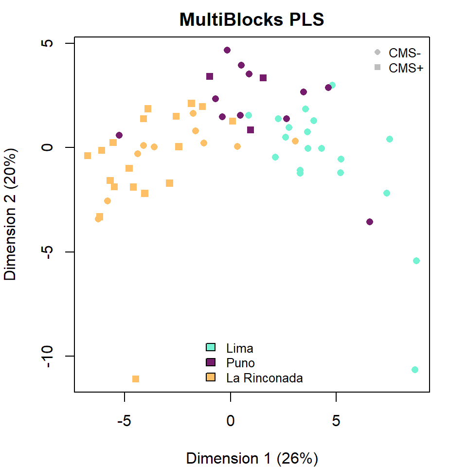
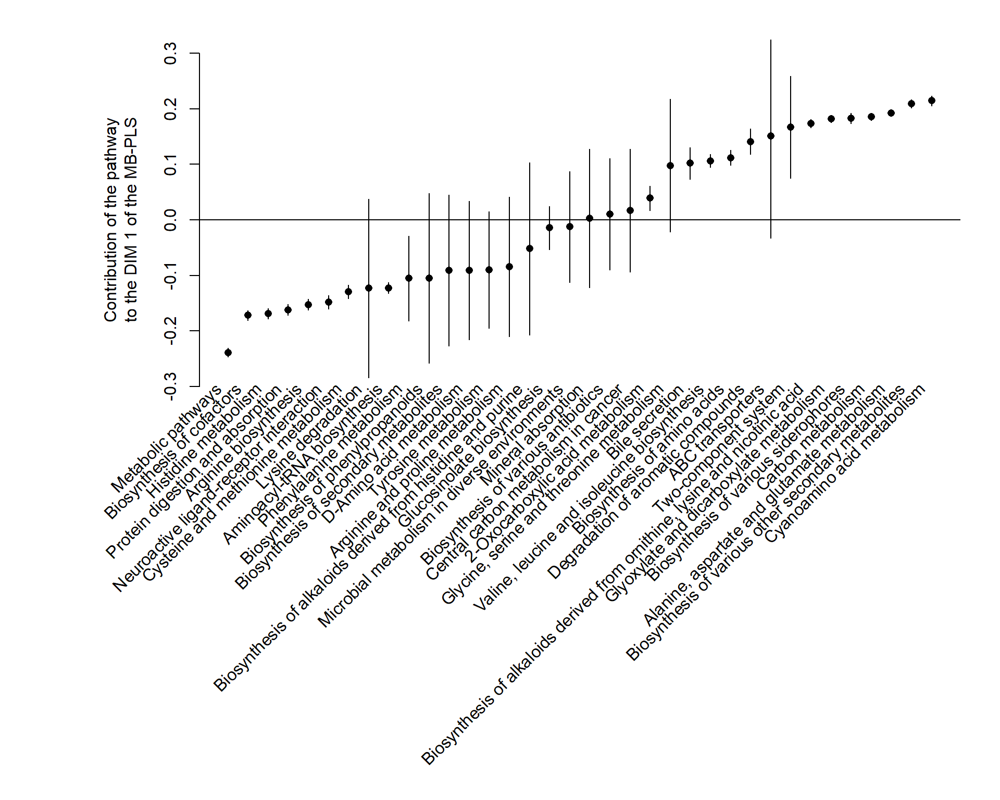

Chapter 4 Hieararchical - Partial Least Square Discriminant Analysis (H-PLS)
The objectives of this second chapter are:
To visualize the metabolite data matrix in a reduced space while accounting for pathway structure (as defined in Chapter 1).
To identify the pathways that are the most discriminative of a functional state (i.e., clinical outputs).
Here, the functional state refers to one of the environmental variables under study. In our case, we aim to determine which variations in plasma metabolites in humans are associated with altitude of residence.
In this context, \(X\) corresponds to plasma metabolomics data, and \(Y\) corresponds to altitude of residence. In our study, altitude is a categorical variable with three levels: Lima, Puno, and La Rinconada (cities in Peru, located respectively at 0 m, 3,800 m, and 5,100 m above sea level).
4.2 Defining the working data: \(X\) et \(Y\)
In this analysis, two sets of variables are defined. The matrix \(X\) corresponds to metabolomic features grouped by biological pathways, while the matrix \(Y\) contains clinical variables measured in the same individuals.
Both matrices are aligned using a common set of sample identifiers to ensure that each row corresponds to the same individual across datasets. Missing values in \(Y\) are handled by removing variables with excessive missingness.
Clinical variables are further organized into predefined groups reflecting physiological functions. Additional covariates such as sampling location and clinical status are encoded and used for visualization purposes.
## X - METABOLOME
X = lapply(clean_data$Metabolites_pathways_no_redondancy$X_list, function(x) t(x))
ID_in_X = rownames(X[[1]])
## Y - CLINICAL VARIABLES
Y = data$PHYSIO$`Clinical data`[ID_in_X,]
y = factor(Y$`City of testing`, levels = c("Lima" ,"Puno", "La Rinconada")) ## Altitude of residence
col.Y = factor(y, levels(y), paletteer::paletteer_d("tvthemes::Alexandrite")[4:6]) # Colors for plots
## CO-variates
pch.CMS = as.numeric(as.character(factor(Y$`CMS groups`,
c("No CMS", "Mild CMS", "Mod-Sev CMS"), c(16, 15, 15)) ))
y.age = (Y$Age)4.3 Visualisation
4.3.1 Individual score plot
We can then perform MB-PLS and visualize the individuals:
res.hpls = H_PLSDA(X_TRAIN = X, Y_TRAIN = as.factor(y))
par(mar= c(4,4,2,2))
plot(res.hpls$Scores$Train[, c(1:2)], col = as.character(col.Y), main = "MultiBlocks PLS",
xlab = paste0("Dimension 1 (",round(res.hpls$Eigenvalue[1], 2)*100, "%)" ),
ylab = paste0("Dimension 2 (",round(res.hpls$Eigenvalue[2], 2)*100, "%)" ),
pch = pch.CMS)
legend("bottom", legend = levels(y),
fill = paletteer::paletteer_d("tvthemes::Alexandrite")[4:6], bty = 'n', cex = 0.8)
legend("topright", legend = c("CMS-", "CMS+"),
pch = c(16,15,15), bty = 'n', cex = 0.8, col ="gray")
The two individuals that appear as mild outliers mainly influence Dimension 2, not Dimension 1. Since the variable of interest (altitude) is primarily discriminated along Dimension 1, this is not problematic. However, if outliers were affecting Dimension 1, their data should be carefully examined.
It is also important to assess how much variance is explained: if the first two dimensions explain more than 30–40% of the metabolomic variability associated with the clinical variable, the visualization can be considered representative of the dataset.
4.3.2 Pathway importances
Using the same model, we can extract pathway scores contributing to discrimination:
most_discriminative <- res.hpls$Upper_loadings[order(abs(res.hpls$Upper_loadings[,1]), decreasing = T)[1:5],]
print(most_discriminative)## comp1 comp2
## Metabolic pathways_1 -0.2432523 0.03354068
## ABC transporters_1 0.2386318 0.01192316
## Cyanoamino acid metabolism_1 0.2185817 -0.01197315
## Biosynthesis of various other secondary metabolites_1 0.2136652 -0.01008021
## Lysine degradation_1 -0.2062004 0.03167174
## comp3 comp4
## Metabolic pathways_1 0.08789360 0.03804882
## ABC transporters_1 -0.05772128 0.01525797
## Cyanoamino acid metabolism_1 -0.04500167 -0.10041447
## Biosynthesis of various other secondary metabolites_1 -0.04802155 -0.13691198
## Lysine degradation_1 0.08173582 -0.09715320
## comp5
## Metabolic pathways_1 -0.18074760
## ABC transporters_1 0.25418892
## Cyanoamino acid metabolism_1 0.01665172
## Biosynthesis of various other secondary metabolites_1 -0.04118681
## Lysine degradation_1 -0.09528158The “1” suffix indicates the first latent component of the PLS model built for each pathway.
4.3.3 Metabolites importances
n this model, we can also access the importance of metabolites within specific pathways. For example, when focusing on the most relevant pathway, “Metabolic pathways”, the most discriminative metabolites within this KEGG category can be identified as follows:
res.hpls$Lower_loadings$`Metabolic pathways`[order(abs(res.hpls$Lower_loadings$`Metabolic pathways`[,1]), decreasing = T)[1:5],]## comp1 comp2
## DEOXYURIDINE 0.3649336 -0.05538352
## DEOXYCARNITINE -0.3211059 -0.12497468
## NICOTINAMIDE 0.2946844 0.17765385
## D-ORNITHINE -0.2834363 0.08069687
## RAFFINOSE 0.2760391 -0.25113834To further investigate these metabolites, their intensity can be visualized as a function of the response variable \(Y\).
4.4 Validation steps of the H-PLSDA
In this section, we propose two key validation approaches:
Compute the \(R^2\) along with the associated \(p\)-value, which addresses the question: does the metabolome separate according to the clinical variable \(Y\)?
Perform a cross-validation procedure to assess the generalizability of the model, which is essential to avoid overfitting and drawing misleading conclusions from the results.
The cross-validation procedure is the most important one.
4.4.1 \(R^2\)
A permutation-based statistical test can be performed by using the H-PLSDA R function, as follow:
# # Statistical test
# obs = res.hpls$R2 # This is the R-squared observed.
#
# n_perm = 999
# R2_perm = c()
# for(i in 1:n_perm){
# ### PERMUTATED MODEL
# mod <- H_PLSDA(X_TRAIN = X, Y_TRAIN = sample(y))
# R2_perm <- c(R2_perm, mod$R2)
# }
# hist(R2_perm)
# abline(v=obs)
print("p-value <0.001")## [1] "p-value <0.001"In this graph, we can check whether our R-squared is rare or commune when the data are permuted. Here, we show that the observed R-Squared is rare and so is p value is really low (p<0.001).
4.4.2 Cross-validation procedure
We generated 50 datasets where: 75% of individuals are used for training, and 25% are used for validation.
Validation data are normalized using training set parameters.
set.seed(123)
B = 50
## MODEL ACCURACY
accuracy = accuracy.random = NULL
Q2 = Q2.permuted = NULL
## PIP
DIM.1 = NULL
for(cv in 1:B){
## Set de calibration et set de validation
intraining = caret::createDataPartition(y, p = 0.75, list = F)
train <- lapply(X, function(x) x[intraining,])
test = lapply(X, function(x) x[-intraining,])
## MODEL
res.hpls <- H_PLSDA(X_TRAIN = train, Y_TRAIN = y[intraining],
new.data = test, new.Y = y[-intraining])
## Permuted classes to get the random accuracy.
res.hpls.permuted.class <- H_PLSDA(X_TRAIN = train, Y_TRAIN = sample(y[intraining]),
new.data = test, new.Y = y[-intraining])
## ACCURACY
accuracy = c(accuracy, res.hpls$Accuracy$overall[[1]])
accuracy.random = c(accuracy.random, res.hpls.permuted.class$Accuracy$overall[[1]])
Q2 = c(Q2, res.hpls$Q2)
Q2.permuted = c(Q2.permuted, res.hpls.permuted.class$Q2)
## PIP
DIM.1 = cbind(DIM.1, res.hpls$Upper_loadings[grep( "_1", rownames(res.hpls$Upper_loadings)), 1])
}4.4.2.1 Model accuracy
Cross-validation also allows us to assess the predictive performance of the model:
par(mar=c(5,5,3,3))
boxplot(cbind(accuracy.random, accuracy), ylab = "Predictive performance\non the test set (Accuracy)",
axes = F, col = c("grey90", "grey30"))
axis(2)
axis(1, at = 1:2, labels = c("", ""), cex = 0.8)
text(1:2, y = -0.1, c("Negative\ncontrol", "H-PLSDA"), xpd = NA)
text(2, 1, "***", xpd = NA)
abline(h=0.8, lty=2)
The y-axis of this Figure represents model accuracy, reflecting the confidence that we can have in the presented results.
An accuracy of 1 indicates perfect classification, whereas an accuracy close to 0.5 corresponds to random performance.
A negative control using permuted altitude labels results in random accuracy (light grey box in the Figure).
The MB-PLS projection (dark grey box in the Figure) reaches an accuracy of approximately 0.7, supporting a low to medium reliability of the previously identified metabolite signatures.
Below an accuracy of 0.8 (represented by the dashed line in the plot), there is a possibility that the model is overfitting.
4.4.2.2 \(Q^2\)
The \(Q^2\) statistic is a cross-validated measure used to evaluate the predictive performance of a model, particularly in PLS-based methods such as PLSDA and H-PLSDA. Unlike \(R^2\), which reflects the goodness of fit on the training data, \(Q^2\) assesses how well the model can generalize to unseen data, making it a more reliable indicator of predictive ability. In practice, \(Q^2\) values closer to 1 indicate strong predictive performance, values above 0.5 are generally considered good, and values near zero indicate weak or no predictive power.
Importantly, negative \(Q^2\) values occur when the prediction error of the model is larger than the variance of the data itself, meaning that the model performs worse than a naive baseline that simply predicts the mean (or random assignment in classification settings). Therefore, a \(Q^2\) below zero suggests that the model has no meaningful predictive ability and is likely overfitting the training data or failing to capture a robust signal in the data structure.
## [1] 0.07657831The median \(Q^2\) is not really good. However, we can see that when classes are permuted th \(Q^2\) is above 0.
4.4.3 Important Pathways
This procedure provides a confidence interval on the contribution of pathways to Dimension 1:
sens = order(rowSums(DIM.1))
sd = apply(DIM.1, 1, sd)
par(mar= c(20, 10, 2, 2))
plot(rowMeans(DIM.1)[sens], ylim = c(-.3, .3), pch = 16, axes = F,
xlab = "", ylab = "Contribution of the pathway\nto the DIM 1 of the MB-PLS")
segments(x0 = 1:nrow(DIM.1),
y0 = rowMeans(DIM.1)[sens] - sd[sens],
y1 = rowMeans(DIM.1)[sens] + sd[sens])
abline(h = 0)
axis(2)
text(1:nrow(DIM.1), y = rep(-0.3, nrow(DIM.1)), labels = sub("_1", "", rownames(DIM.1))[sens], xpd = NA, srt =45, pos = 2)